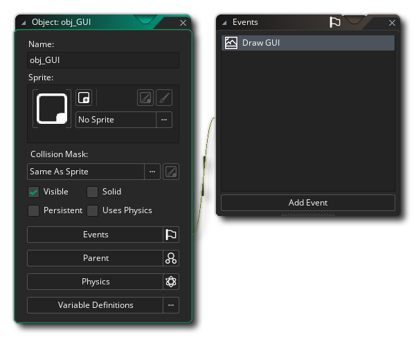
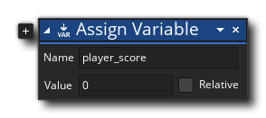
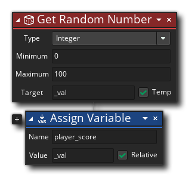
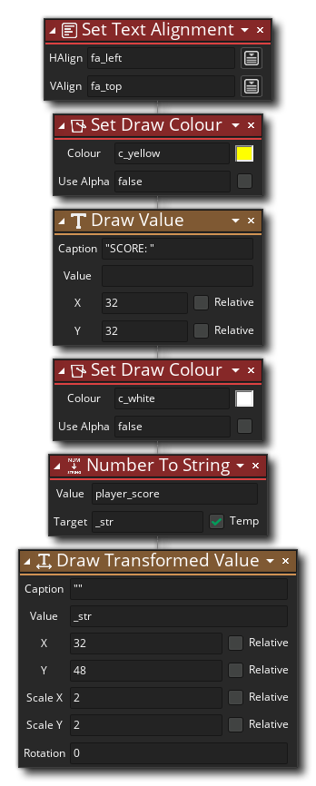
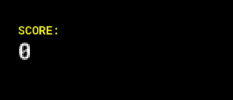

本节（以及接下来的运动和控制部分）旨在为你提供GML 或GML Visual的实际例子，使你能够尽快开始制作你的第一个游戏项目。我们不会对事情做太深入的解释，因为我们希望你能尽快开始制作东西，所以我们鼓励你在进行过程中探索任何链接，并使用手册的 "搜索 "功能来寻找你不确定的额外信息。
在这一节中，我们将专注于简单地将信息绘制到屏幕上，包括文本和图像，同时还将解释一下不同的绘图事件，特别是主绘图事件和绘图GUI 事件（注意，在一些例子中，你将需要添加其他事件，但我们会在谈到这些事件时解释）。
在做任何进一步的工作之前，你可能想从 "开始 "页上做一个新的项目（GML 或GML Visual），并添加（或创建）一些sprites 以及一两个object ，因为我们将给你一些代码，你可以用这些代码进行测试。即使是一个白色的正方形，现在也可以作为我们的sprite 的object!
现在，正如在 "对象和实例"一节中提到的，如果你不给object ，那么GameMaker将默认绘制，也就是说，如果object 有一个分配给它的sprite ，这个sprite 将被绘制，并完成任何已经添加的变换。我们所说的变换是什么意思？嗯，每个object 都有一些内置的变量，这些变量将控制object 的实例在默认绘制时如何绘制其sprite ，你可以在游戏运行时改变这些变量，以改变sprite 的绘制方式。
注意：你可以在这里找到所有可用于转换实例的内置变量的列表sprites 。 GML Visual用户有一些影响这些变量的专门操作，你可以在这里找到，你也可以使用实际的变量本身，以及Get Instance Variable和Set Instance Variable操作。
让我们看看一些例子。
α 值是控制正在绘制的东西的透明度，在GameMaker中，你可以使用 image_alpha 内置变量来改变指定的sprite 的透明度。要看这是如何工作的，打开（或创建）一个object ，给它分配一个sprite ，然后给object 一个创建事件。在创建事件中，只需添加以下GML Visual或GML。

var _val = random(1);
image_alpha = _val;
图像阿尔法的计算值从0到1，其中0是完全透明的，1是完全不透明的（默认情况下，它被设置为1）。所以在这个例子中，我们所做的就是把图像alpha设置为一个从0到1的随机十进制值。将这个object 的几个实例放在一个room ，然后点击IDE 顶部的播放按钮 。
你应该看到，object 的每个实例都以不同的透明度绘制其sprite ，例如。

当你的object 默认画出一个sprite ，这个sprite 实际上是被画出了一个颜色的混合 （或着色），这个颜色值被存储在 image_blend 内置变量中。默认情况下，这个颜色是白色的，这基本上意味着当sprite 在屏幕上显示时，不会有任何颜色被加入。然而，你可以使用其他颜色来实现特殊效果，例如，使用红色来显示实例受到了一些伤害。
在这个例子中，我们要在按住一个键的时候用sprite 混合不同的颜色，因此你需要打开（或创建）一个object ，给它分配一个sprite ，然后给这个object 一个向下键<Space>事件。

在这个按键事件中，添加以下GML Visual或GML。

var _col = choose(c_red, c_green, c_blue, c_yellow, c_fuchsia, c_orange);
image_blend = _col;
object 在一个room ，然后点击IDE 顶部的 "播放 "按钮 ，并测试按住和松开空格键 。你应该看到，在按住键的时候，每个实例都会迅速地改变它的颜色，而当它被释放的时候，就会停止改变。

我们可以为我们的sprite ，另一个属性是比例 值，允许我们在任何时候把它画大或画小。比例是由两个独立的变量，即 image_xscale 和 image_yscale 变量沿X和Y轴独立计算的。默认情况下，这两个变量被设置为1，它们的作用类似于乘数，所以0.5的值是一半的比例，2的值是两倍的比例。
重要的是! 使用这些变量改变指定的sprite 规模，也将改变边界框的大小，使之相匹配，这意味着sprite 的碰撞检测区域也将扩大。
sprite 在这个例子中，我们将使用一些简单的数学方法来使一个实例在loop 中上下缩放。首先，打开（或创建）一个object ，给它指定一个sprite ，然后给object 一个创建事件。在这个事件中添加以下内容。

timer = 0;
现在用这个添加一个步骤事件到object 。

timer = timer + 1;
var _val = dsin(timer);
image_xscale = 1 + _val;
image_yscale = 1 + _val;
这里我们使用数学函数 dsin()来生成一个介于-1和1之间的值，然后将其应用于刻度变量。在将一些实例放入room ，并按下播放按钮 ，你应该看到这些实例是如何从0的比例上升到2的比例，然后再返回。

最后一件事......将 " image_yscale"部分改为 " 1 - _val"，看看会发生什么。
上面的例子只是说明了当GameMaker默认绘制时，你可以操作object sprite ，但如果你想为一个object ，绘制不止一个东西呢？在这些情况下，你需要使用Draw Event来明确告诉GameMaker要绘制什么，这就是我们在下面的例子中要做的。
对于这个例子，你需要两个sprites 和一个object 。将sprites 称为 " spr_One" 和 " spr_Two" ，然后将 " spr_One" 的原点设为中心，将 " spr_Two" 的原点设为左中部。
将第一个sprite （" spr_One"与中心原点）分配给你所创建的object ，然后添加一个创建事件。在创建事件中，添加以下GML Visual或GML。

draw_angle = 0;
我们将使用这个变量来旋转 " spr_Two" ，并将其覆盖在分配给sprite 的object 上（" spr_One"）。要做到这一点，我们需要给object 添加一个绘图事件 。通过这样做，我们告诉GameMaker，我们要接管这个实例的绘图，这意味着我们的代码将包括调用 draw_self()函数或 绘制自我动作。这个动作简单地复制了object 在没有Draw Event的情况下所做的事情，它是默认绘制指定的sprite 。然后我们将绘制第二个sprite ，我们想用它作为旋转的覆盖sprite 。GML 视觉和GML 看起来像这样。

draw_self();
draw_angle = draw_angle + 0.5;
draw_sprite_ext(spr_Two, 0, x, y, 1, 1, draw_angle, c_red, 1);
object 在room 编辑器中添加一些实例，然后按下IDE顶部的播放按钮 。如果一切正常，你现在应该看到类似这样的东西。

在我们离开这个例子之前，让我们稍微调整一下，不要让" spr_Two"简单地旋转，我们要让它指向鼠标的位置。为此，我们需要改变绘图事件GML Visual或GML ，使其看起来像这样。

draw_self();
draw_angle = point_direction(x, y, mouse_x, mouse_y);
draw_sprite_ext(spr_Two, 0, x, y, 1, 1, draw_angle, c_red, 1);
再次运行该项目，这一次你会看到非常不同的东西!
现在sprite ，不管你把它移到哪里，它都会指向鼠标!正如你所看到的，分层sprites 是一个很好的方法，可以为一个object 添加细节，或者让某些东西独立于分配给sprite 的 "基础 "object ，而且它是一个强大的工具，你可能会在你自己的项目中经常使用。
你也可以在Draw Event中绘制sprites 以外的东西，比如文本，或者形状。在这个例子中，我们将使用GML Visual 或GML draw_self() 函数来绘制object sprite ，但我们也将绘制一些其他东西，首先是一些文本。在这个例子中，你需要一个sprite 和一个object （将sprite 分配给它）。在object ，首先用这个GML Visual或GML添加一个创建事件。

name = choose("Fred", "Jonas", "Sharon", "Kate", "Frank", "John", "Monica", "Amanda");
number = irandom(100);
所有这一切都告诉GameMaker从列出的名字中选择一个，并将其分配给一个变量，以及为每个实例生成一个从0到100的随机数object 。 我们想把这些值画到屏幕上，因此，为此你现在需要添加一个Draw Event，并在其中添加以下GML Visual或GML。

draw_self();
draw_set_halign(fa_center);
draw_text(x, y + 32, "My name is " + name);
draw_text(x, y + 48, "My number is " + string(number));
你会注意到在上面的代码中，我们使用了 string()函数或 数字到字符串动作在我们要绘制的 "数字 "变量上。这是因为所有的文本都必须由字符组成，而不是由数值组成，所以我们需要使用这个函数/动作将数字值转换成我们想要绘制的那些字符。在这种情况下，我们要把我们生成的随机数变成一个可以绘制的字符 "字符串"。还请注意，我们设置了文本对齐方式。这只是告诉GameMaker相对于给定的位置从哪里开始绘制文本，在这种情况下，我们希望文本沿着X轴居中。
object 在room 编辑器中添加一些实例，然后按下IDE 顶部的播放按钮 。你应该看到像这样的东西。

在到目前为止的所有例子中，我们一直在绘制分配给实例的sprite ，但这并不总是这样的。你可以在draw事件中绘制任何你想要的东西，而不管分配的sprite 。为了说明这一点，我们将改变目前的代码，去掉 draw_self() 的调用，用一个函数来画一个彩色的椭圆，像这样。

draw_ellipse_colour(x - 50, y - 32, x + 50, y + 32, c_fuchsia, c_lime, false);
draw_set_halign(fa_center);
draw_text(x, y + 32, "My name is " + name);
draw_text(x, y + 48, "My number is " + string(number));
再次运行该项目，你应该看到这个。

关于这一点，需要注意的是，即使我们没有绘制指定的sprite ，它仍然会被用于碰撞检测。因此，当你可能正在绘制一个东西时，碰撞仍然会根据指定的sprite ，就像它和实例一起被放置在room ，即使它不可见。这实际上是很方便的，因为它意味着你可以绘制不同的sprites ，但保持一个基于指定的sprite 的单一碰撞掩码。还要注意的是，你仍然可以应用不同的变换，比如X/Y比例，并且碰撞将基于改变后的尺寸，尽管没有任何东西被画出来显示这一点。
我们在页面顶部提到，我们将讨论绘制GUI事件以及绘制事件，所以现在让我们看看。绘制GUI事件在一个叫做 GUI层的东西上工作，它是一个特殊的绘图层，具有固定的宽度和高度，在room 。GUI层的好处是 它不随room 相机移动，所以它是添加静态GUI项目的理想场所，如分数、健康条和其他你的游戏需要传达给用户的信息。你可以从手册的 "绘图事件"部分找到更多关于GUI层的信息。
注意：Rooms 可以大于屏幕尺寸，所以你可以有大的关卡让玩家在其中移动。这意味着在Room 编辑器中（或在代码中），你需要定义一个跟随你游戏动作的摄像机 。这基本上是一种设置屏幕固定区域的方式，以根据--例如--玩家在room 中的位置来显示更大的room 的不同部分，并在很多游戏中使用。想想在经典游戏如《马里奥》或《塞尔达》中，视角总是跟随主角的方式。这是用摄像机完成的。更多信息见手册中Room 编辑部分的房间属性一节。
下面的例子都将使用Draw GUI事件，所以你需要创建一个object ，并将该事件添加到其中。注意，这个object 不需要分配一个sprite ，因为我们不想默认绘制任何东西，也不需要它来检测碰撞。像这样的Objects ，只为绘制东西或控制游戏的某些方面而设计，通常被称为控制器对象。还要注意的是，我们将在所有的例子中使用相同的object ，所以我们建议你一个接一个地去看（尽管这并不是严格意义上的必要）。
当绘制到GUI层时，左上角是原点位置，向右是+X，向下是+Y。这使得文本和图形的定位非常容易，正如你在这个例子中看到的。我们在这里要做的是画一个代表玩家分数的值，所以在我们的object ，我们需要添加一个创建事件 来初始化一个变量来保存这个值，像这样。

player_score = 0;
我们还想在object ，因为我们要用它来增加每次按空格键时的分数，所以要添加一个键盘向下<空格>事件。

在这个事件中，添加以下内容。

var _val = irandom(100);
player_score = player_score + _val;
最后，让我们在Draw GUI事件中绘制分数值，像这样。
在这个事件中，添加以下内容。

draw_set_halign(fa_left);
draw_set_colour(c_yellow);
draw_text(32, 32, "SCORE:");
draw_set_colour(c_white);
var _str = string(player_score);
draw_text_transformed(32, 48, _str, 2, 2, 0);
你会注意到我们是如何使用硬编码（或固定）值来绘制文本的x/y位置的，因为我们不需要它是相对于任何实例的，因为我们正在绘制到GUI层。我们还使用了 "设置颜色 "函数来改变文本的颜色，以及 "转换 "函数来使实际的分数值变大，这说明了你可以在你自己的游戏中定制文本元素。
现在把这个object 的一个实例添加到你的room ，然后按下播放按钮 。当游戏运行时，按下并释放 <Space> ，你应该看到分数值增加。

在这个例子中，我们将使用GUI层来绘制一些sprites 。最明显的用途是绘制玩家的生活，所以让我们继续做下去吧在这个例子中，你需要一个sprite ，它应该是64x64像素，但它不应该被分配到object ，因为我们将自己画它。
首先，我们需要在创建事件中添加一些新的变量到object （如果你已经做了前面的例子，在已经有的下面添加以下内容）。

player_lives = 3;
gui_w = display_get_gui_width();
在这段代码中，我们为玩家的生命初始化了一个变量，但我们也创建了一个变量来保持GUI层的宽度，这样我们就可以相对于屏幕的右边正确定位。我们可以在代码中硬编码一个值并使用它，但这将意味着如果我们对room ，或者如果我们以后添加摄像机等的尺寸做任何改变，那么我们就需要通过代码并改变所有的值。使用 display_get_gui_width()函数，意味着我们不需要担心任何未来的变化，因为代码会自动适应GUI层最终的尺寸。
接下来，我们要在object ，因为我们要用它来改变每次按下回车键时的生命数量，所以要添加一个键盘按下<Enter>事件。

在这个事件中，添加以下内容。

player_lives = player_lives - 1;
if player_lives < 0
{
player_lives = 3;
}
最后，我们需要将sprites 绘制到显示器上。为此，我们将使用 " for"loop (这里使用GML 的信息，这里使用GML 的视觉信息)，以及 GUI 宽度变量，将所有内容定位在屏幕的右上角。所以，把这个添加到Draw Gui事件中（在之前的例子中可能有的任何其他动作之后）。

for (var i = 0; i < player_lives; i += 1)
{
var _xx = gui_w - 48 - (i * 70);
draw_sprite(spr_Heart, 0, _xx, 48);
}
如果你还没有把这个object 的实例添加到room ，现在就去添加吧（只有一个！），然后按下播放按钮 。一旦游戏运行，就按下 <Enter> 键的各种时间，以看到生命的变化。
在你离开这个例子之前，你应该试验一下生命的数量，看看会发生什么。目前，它被设置为3，但改变创建事件和按键事件，将数值设置为5，或10......如果你做的一切都正确，那么代码应该适应并正确地绘制它们
这最后一个例子包括在GUI层上绘制一个健康条。有很多方法可以做到这一点，但GameMaker有一个内置的功能，专门用来做健康条，所以这就是我们在这里要使用的，尽管你也可以用sprites 或形状来创建你自己的。首先，和以前一样，我们需要初始化一个变量来保存健康值，所以在GML Visual或GML ，添加到object 的创建事件中（在任何其他可能已经存在的代码之后）。

player_health = 100;
我们想使用箭头键来改变健康值的高低，这取决于哪个箭头键被按下，我们可以通过添加两个键盘按压<箭头>事件来实现，然而，使用一个步骤事件和一些代码来检查按键可能更容易，所以现在继续添加一个步骤事件，用以下GML Visual或GML。

if keyboard_check(vk_up)
{
if (player_health < 100)
{
player_health = player_health + 1;
}
}
if (keyboard_check(vk_down))
{
if (player_health > 0)
{
player_health = player_health - 1;
}
}
完成这些后，我们就可以开始绘制健康条了，这是在Draw GUI事件中完成的，添加以下内容（在其他已经存在的内容之后）。

var _xx = display_get_gui_width() / 2;
draw_healthbar(_xx - 50, 24, _xx + 50, 40, player_health, c_black, c_red, c_lime, 0, true, true);
如果你还没有这样做的话，将这个object 的实例添加到一个room （虽然只有一个！），然后按下播放按钮 。一旦游戏开始运行，就按下 <Up Arrow> 和 <Down Arrow> 键，看健康状况的变化。

我们希望在做完这些例子后，你在使用GameMaker时有了更多的信心，对它的工作原理有了更多的了解。下一节将探讨如何让你所画的这些东西在room ，以及接受--和响应--用户输入。